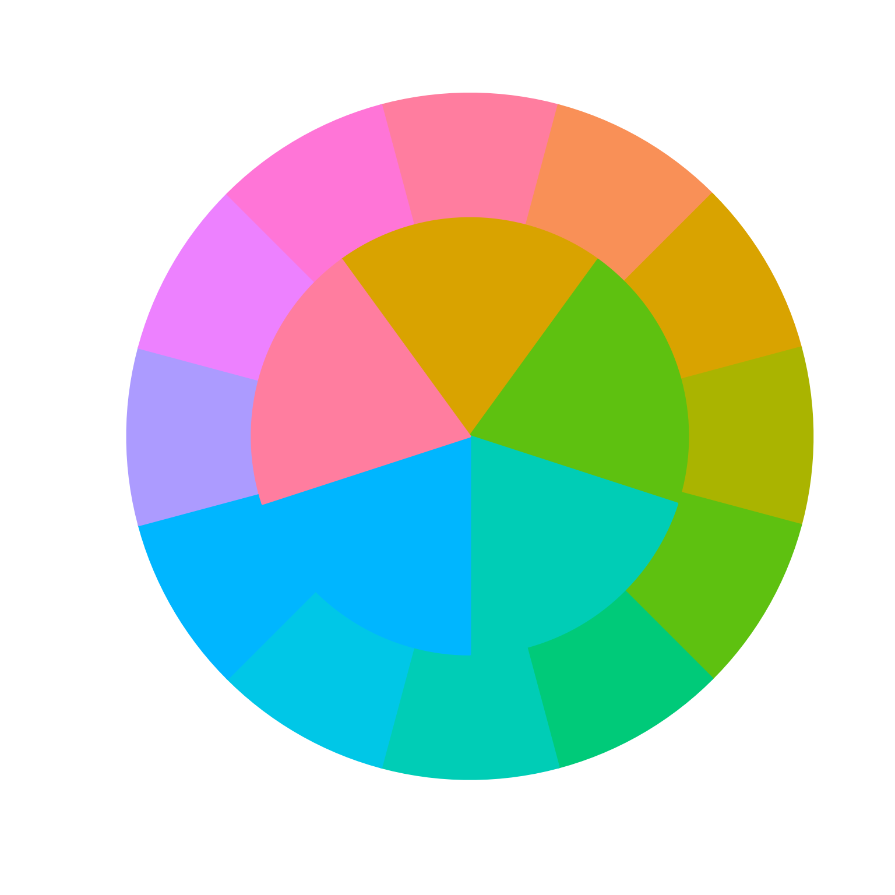
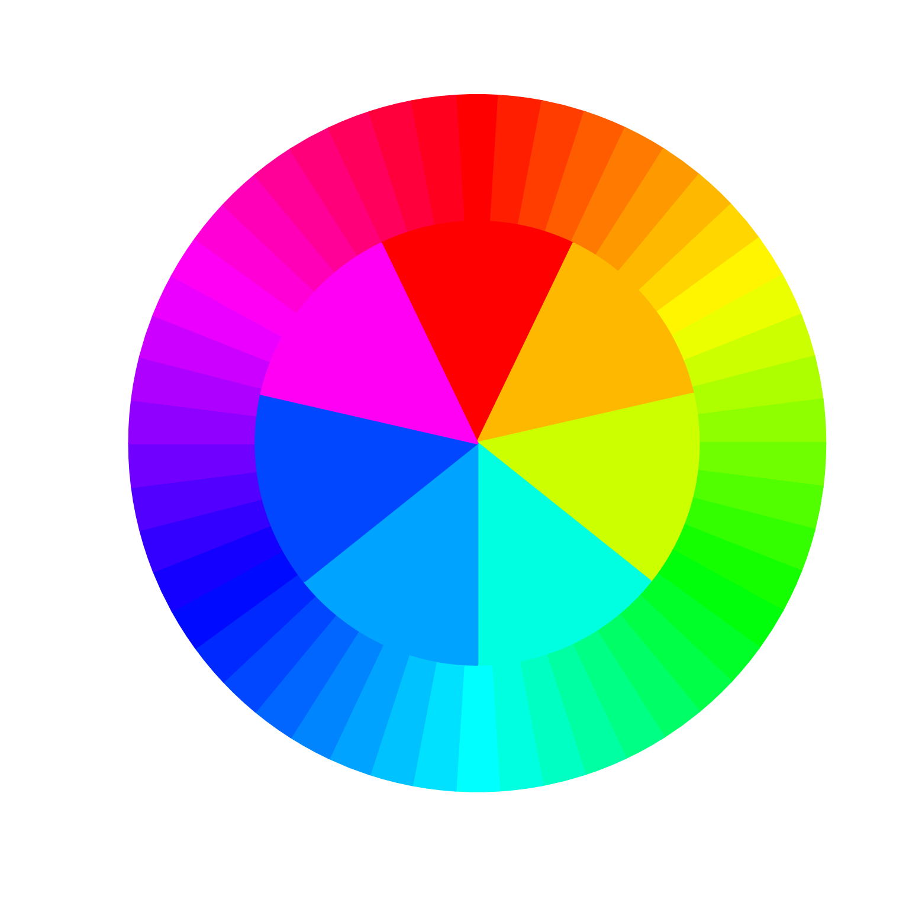
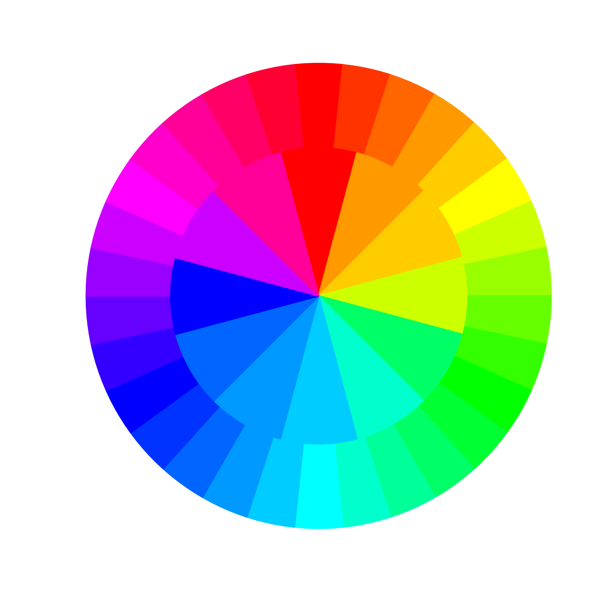

Find a spread of colors with minimum distance between them
Source:R/colorjam-find-color-spread.R
find_color_spread.RdFind a spread of colors with minimum distance between them
Usage
find_color_spread(
x,
n = 2,
min_distance = 11.5,
step_distance = -1,
method = "cie2000",
use_white = "F5",
byCols = c("-met_n", "-d", "-found_n"),
first_only = TRUE,
verbose = FALSE,
...
)Arguments
- x
charactervector of colors- n
integerminimum number of colors- min_distance
numericminimum distance required between colors.- step_distance
numericdefault -1, when non-zero themin_distanceis iterated until themin_distancecriteria are met for at leastncolors.Use
step_distance=0to prevent returning colors when there are notncolors with distancemin_distance.
- method
characterdistance method, default 'cie2000'.- use_white
characterwhite reference, default 'F5'.- byCols
characterwith optional column sorting, used to prioritize results whenfirst_only=FALSE. The columns are sorted as follows:'-met_n'- decreasing filter of whether thenthreshold was met'-d'- decreasing minimum distance in each color set'-found_n'- decreasing number of colors that met the criteria
- first_only
logicaldefault TRUE, whether to return only the first successful color combination meeting the criteria formin_distanceandn.When
first_only=FALSEit will exhaustively determine all possible combinations of colors, which is time consuming for largernvalues, even whenn=6. However, this approach is able to find the most different combination of colors fromx, based uponbyColscolumn sorting.
- ...
additional arguments are passed to
color_distance().
Value
character vector of colors with minimum distances to each
other of at least min_distance, or lower when step_distance is
negative. Note that it may return more than n colors, when
there are multiple colors to meet this criteria.
Details
Intended to be called internally by add_colors(), this function
takes a vector of colors x, and finds a subset of
at least n colors that each have color distance min_distance
using the method and use_white white reference.
It is intended to solve the problem when M colors are available,
very close to a neighboring color, but a subset N colors are
requested which each have at least min_distance from each other.
This function is currently not very optimized, although it does avoid repeating combinations of color tests.
It currently iterates each color, then each secondary color with
at least min_distance, and so on, until at least n colors
in a set have at least min_distance distance between them.
It then runs all combinations and sorts for the set with the
highest minimum distance, thereby the "most distinctive subset".
See also
Other colorjam internal:
color_distance(),
jam_pal(),
rainbowJam_v1(),
show_color_distance(),
slot_colors(),
vals2colorLevels()
Examples
x12 <- colorspace::rainbow_hcl(12, c=95)
new5 <- sort_colors(find_color_spread(x12, n=5, min_distance=40))
color_pie(list(x12, new5))

x12 <- rainbow(50)
new7 <- sort_colors(find_color_spread(x12, n=7, min_distance=30))
color_pie(list(x12, new7))

x3a <- rainbow(30)
x3b <- sort_colors(find_color_spread(x3a, n=12, min_distance=20))
color_pie(list(x3a, x3b))
